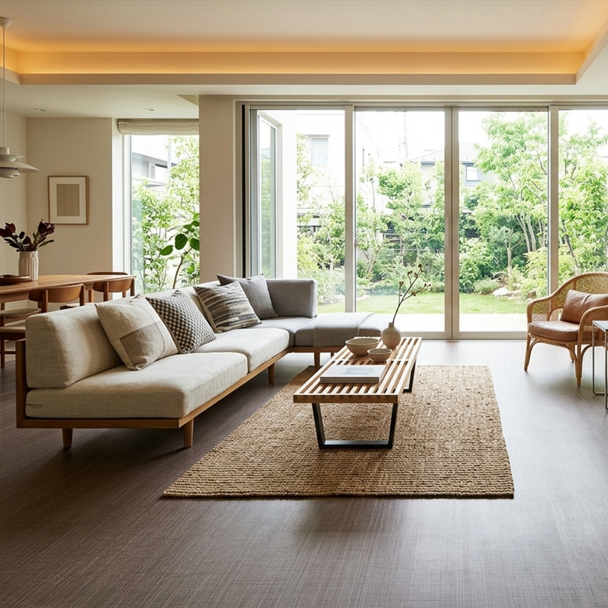
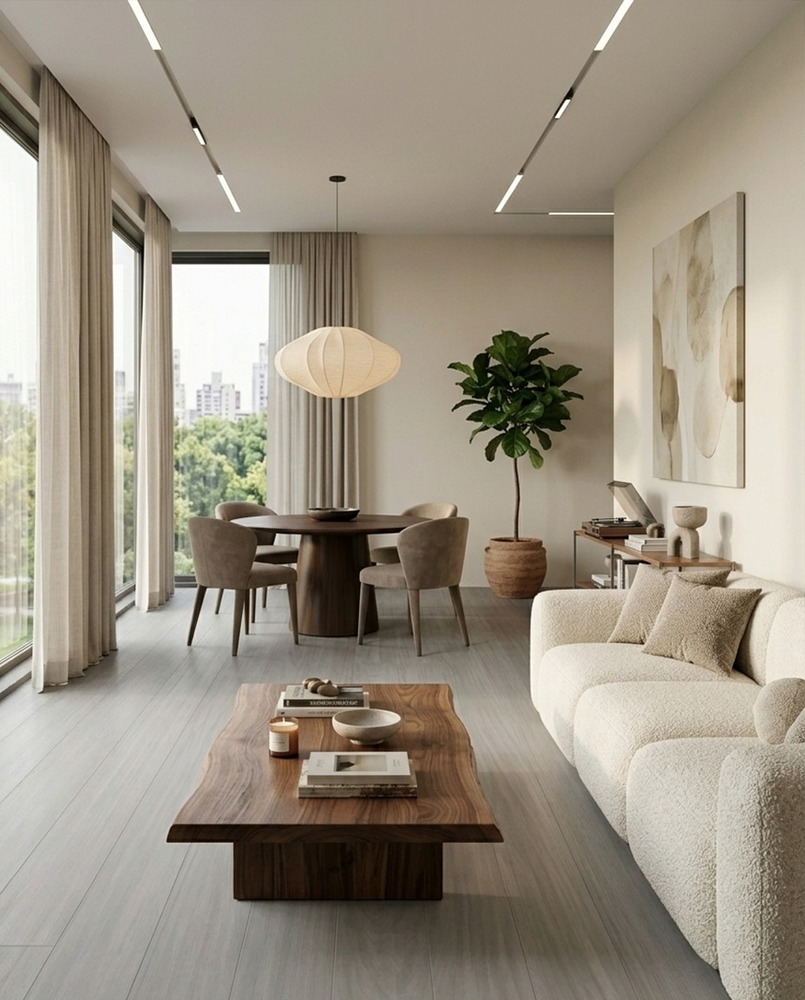

Linha residencial
Linha residencial Ecokap
Indicada para casas, apartamentos, quartos, salas e ambientes residenciais em geral. É uma opção confortável, bonita e prática para quem busca renovar o ambiente com visual acolhedor.
Une o charme dos acabamentos amadeirados com a facilidade de limpeza e conservação do piso vinílico.
Uso residencial
Visual madeira
Fácil conservação
Conforto no dia a dia
Orçar linha residencial

